Ampliación
Este apartado no forma parte del núcleo de la unidad ni entra en el examen: amplía lo estudiado con los circuitos secuenciales (biestables, contadores y registros), que son la base de cualquier sistema con memoria. Léelo si quieres entender cómo se pasa de las puertas lógicas a un ordenador; los ejercicios de la unidad son los del apartado 6.
A los circuitos vistos hasta ahora se los estudia dentro de la llamada “lógica combinacional”. En todos ellos, dependiendo de los valores de las variables de entrada se obtiene una única salida.
Los circuitos secuenciales son aquellos cuya salida en cualquier momento no depende sólo de la entrada al circuito sino también de la secuencia de entradas a las que estuvo sometido anteriormente (estado interno).
Los circuitos secuenciales se basan en los denominados biestables, que son circuitos muy básicos que tienen dos posibles estados (0 o 1 lógicos) y que tienen la capacidad de mantenerse en cualquiera de sus dos estados de forma indefinida si no los perturbamos. Es decir, son circuitos que permiten guardar memoria de un estado lógico.
Cada uno de estos biestables solo puede almacenar un bit (0 o 1), pero podemos combinarlos para crear circuitos funcionales como, por ejemplo, registros de desplazamiento, contadores o hasta memorias RAM.
Biestables
Los biestables pueden clasificarse en dos grandes grupos:
- Asíncronos: Los cambios de estado se producen cuando se modifican los valores de las entradas. El más utilizado es el R-S.
- Síncronos: Los cambios de estado se producen cuando, además de estar presentes las entradas adecuadas, se produce la transición de una señal compartida por los elementos del sistema y que sincroniza su funcionamiento. A esta señal se le llama señal de reloj o señal clock y es una onda cuadrada que va variando su valor de 0 a 1 cada cierto tiempo. El cambio en la salida puede activarse por nivel, alto (1) o bajo (0) o por flanco, de subida (0→1) o de bajada (1→0).
- Activados por nivel (también se conocen como latches): estudiaremos el tipo D
- Activados por flanco (conocidos como flip-flops): veremos los tipos J-K, D y T.
Si representamos una señal de reloj frente al tiempo, podemos identificar los diferentes niveles y flancos en esta imagen:
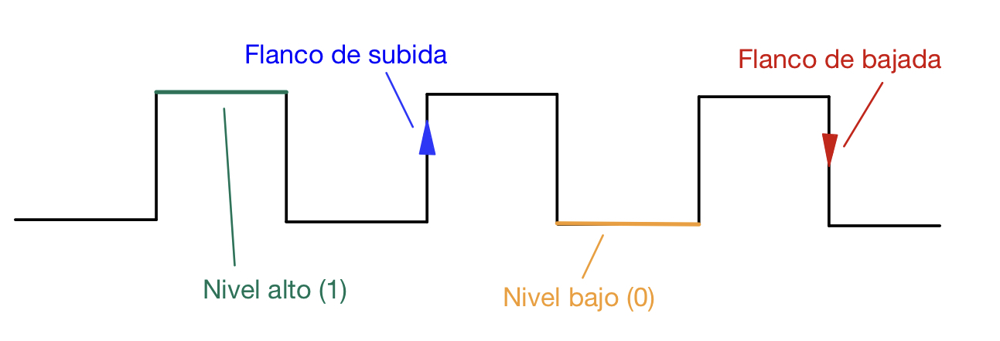
Biestables asíncronos
Biestable R-S
Es un circuito que puede construirse con dos puertas NOR cuyas salidas se realimentan de una a otra.
En el circuito tenemos dos entradas S (set) y R (reset), y dos salidas, que en realidad es una sola pero tanto en forma normal como invertida, Q y Q.
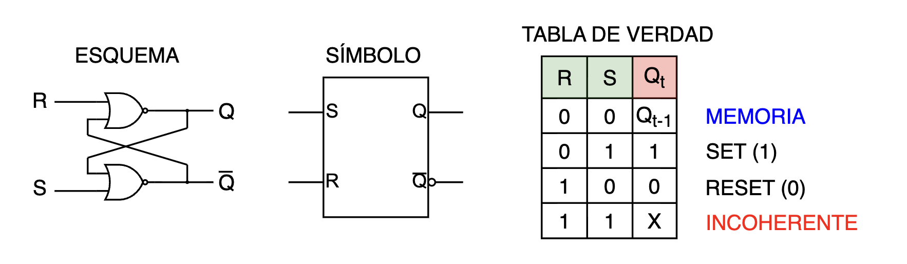
El valor Qt en la tabla es el valor que tiene la salida Q antes de aplicar un nuevo valor de entrada, el valor de la salida Qt+1 es el valor que toma la salida Q dependiendo de los valores de entrada.
El funcionamiento es el siguiente:
- Las dos entradas a cero (R = S = 0) no producen variación del valor de salida. El circuito mantiene su estado (se comporta como una memoria).
- Si la entrada S = 1, el valor de la salida pasa a 1 (señal "SET", pone a 1 el biestable).
- Si la entrada R = 1, el valor de la salida pasa a 0 (señal "RESET", pone a 0 el biestable).
- Las dos entradas a uno (R = S = 1) darían una salida indeterminada, por lo que nunca deben usarse en este biestable. Sería como intentar poner el biestable a 0 y a 1 a la vez, lo que no tiene sentido.
Biestables síncronos por nivel (latches)
Biestable tipo D síncrono por nivel
En el caso de los biestables síncronos por nivel, las variaciones de las entradas sólo afectan a las salidas en el momento en que el nivel del reloj está activo.
El biestable tipo D posee una entrada D (data) y otra de habilitación E (enable), de forma que:
- Cuando el biestable está habilitado (E = 1) la salida copia el valor de la entrada D.
- Cuando el biestable no está habilitado (E = 0) mantiene (memoriza) su valor anterior, aunque cambie la entrada D.
Está construido a partir de un latch R-S, pero nos permite eliminar la posibilidad de alcanzar el estado prohibido de los biestables R-S.
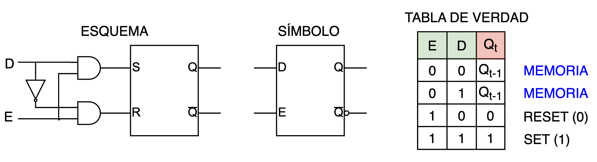
Si la entrada E del biestable la conectamos a la señal del reloj (clock - CLK), funcionará de forma síncrona:
- Cuando el reloj valga "1", el biestable tomará el valor que tenga puesto en ese momento en la entrada D.
- Cuando el reloj valga "0", el biestable mantendrá su último valor, sea cual sea el valor de D.
Podemos representar un cronograma de ejemplo para ver cómo iría cambiando cada señal según el momento:
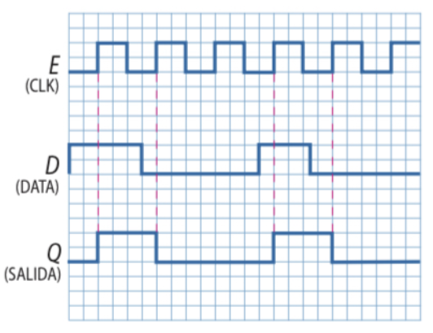
Biestables síncronos por flanco (flip-flops)
Biestable tipo D síncrono por flanco
En un biestable tipo D activado por flanco, el valor presente en la entrada D se copia en la salida cuando el reloj hace un flanco ascendente o descendente (según el tipo de flip-flop) y se mantiene hasta el siguiente flanco (independientemente de lo que haga la señal de entrada).
Es el elemento básico de memorización de 1 bit.
Se puede construir un flip-flop tipo D a partir de dos biestables tipo D asíncronos, como los que hemos visto ya.
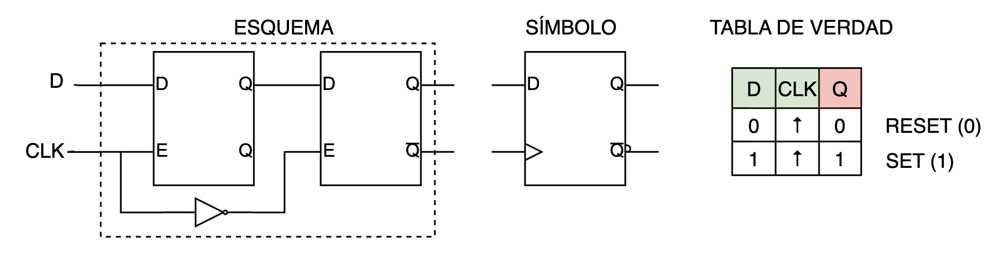
Aquí tienes un cronograma de ejemplo de funcionamiento de este biestable:
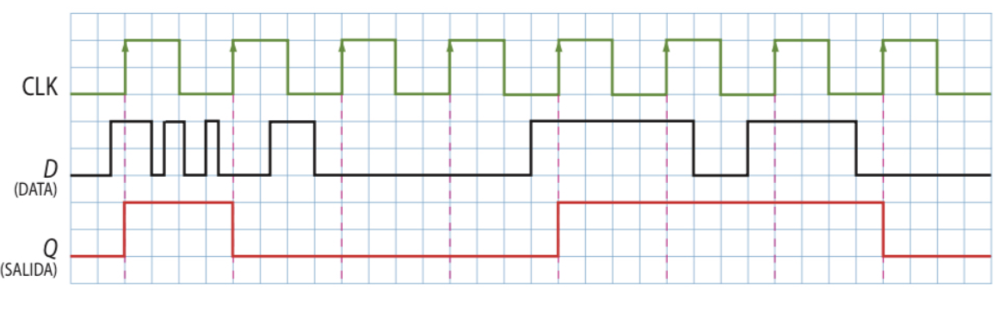
Cuando se produce un flanco de subida, a la salida Q se copia el dato que tenemos en la entrada D y el resto del tiempo se mantiene el dato que teníamos almacenado (por eso se considera la unidad básica de memoria)
Biestable tipo J-K
Tiene un funcionamiento similar al RS, pero la entrada K actúa para el borrado (Reset) y la J para la puesta a 1 (Set). La única diferencia es que se elimina la condición "prohibida" en la que tenemos R y S puestos a 1. En el caso de este biestable, cuando J = K = 1, se produce un volteo, es decir, en el siguiente ciclo de reloj el flip-flop cambia a su estado opuesto. Esto se llama basculación (toggle) y es un efecto muy útil en los contadores y en otros circuitos secuenciales.
Este biestable puede construirse a partir de un tipo D síncrono por flanco, añadiéndole el circuito lógico correspondiente:
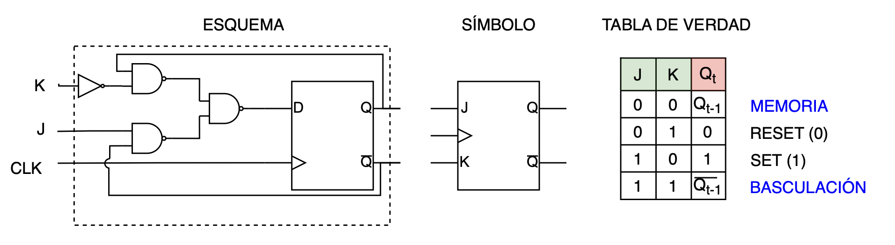
Si escribimos la tabla de verdad de la señal "D" en función de las entradas J y K y de la salida Q en el estado anterior, podemos obtener la función lógica y entender el circuito lógico que hemos dibujado en la figura anterior:
| J(t) | K(t) | Q(t) | D = Q(t+1) |
|---|---|---|---|
| 0 | 0 | 0 | 0 |
| 0 | 0 | 1 | 1 |
| 0 | 1 | 0 | 0 |
| 0 | 1 | 1 | 0 |
| 1 | 0 | 0 | 1 |
| 1 | 0 | 1 | 1 |
| 1 | 1 | 0 | 1 |
| 1 | 1 | 1 | 0 |
Si escribimos la primera forma canónica de la función, obtenemos:
\[D=\overline{J}\cdot \overline{K}\cdot Q+J\cdot \overline{K}\cdot \overline{Q}+J\cdot \overline{K}\cdot Q+J\cdot K \cdot \overline{Q}\]
Y, manipulando esa expresión, podemos obtener la expresión para implementar con puertas NAND:
\[D=(J+ \overline{J})\cdot \overline{K}\cdot Q+J\cdot (K+ \overline{K})\cdot \overline{Q}=\overline{K}\cdot Q+J\cdot \overline{Q}=\overline{\overline{\overline{K}\cdot Q}\cdot \overline{J\cdot \overline{Q}}}\]
Aquí puedes ver un cronograma de ejemplo de funcionamiento de este biestable J-K:
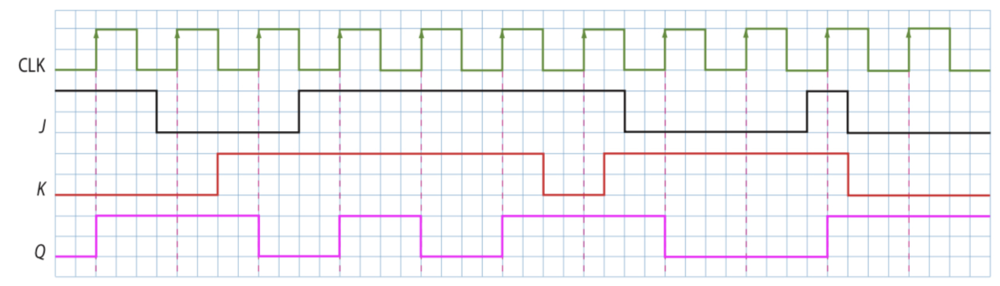
Biestable tipo T
Es, simplemente, un biestable J-K con sus dos entradas unidas (es decir, T = J = K). Por lo tanto, su funcionamiento es el siguiente:
- Si T = 0, su valor no cambia con el pulso de reloj, por lo que se comporta como una memoria.
- Si T = 1, su valor bascula con el pulso de reloj.
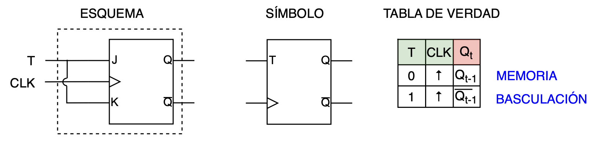
Aquí tienes un cronograma de ejemplo de funcionamiento:
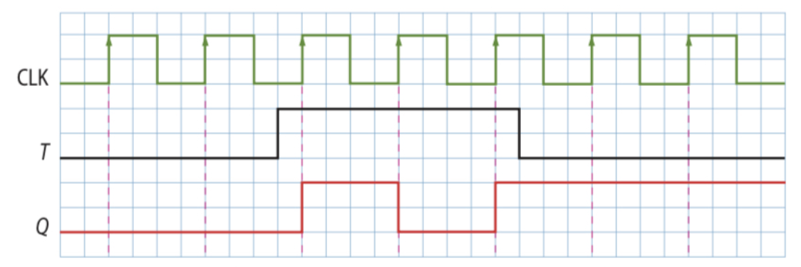
Pese a su funcionamiento tan simple, es un biestable muy útil para construir contadores y divisores de frecuencia.
Ejemplos de circuitos secuenciales
Dado que los biestables son los elementos básicos de memoria, son imprescindibles en los sistemas secuenciales. Las principales aplicaciones de los biestables son:
- Contadores, que son capaces de generar una determinada secuencia y también pueden utilizarse como divisores de frecuencia.
- Registros de desplazamiento, que permiten almacenar datos de distintas maneras.
CONTADORES
Un contador es un dispositivo constituido por flip-flops que genera una secuencia que se repite en el tiempo. Existen básicamente dos tipos: los asíncronos y los síncronos.
Contador asíncrono
En un contador asíncrono, los flip-flops no cambian de estado al mismo tiempo, dado que no comparten la misma señal de reloj.
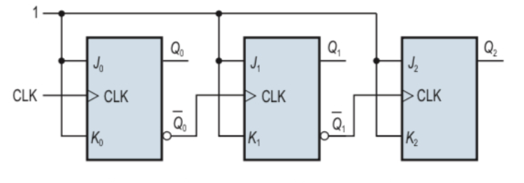
La señal de reloj solamente está conectada al primer biestable; el segundo biestable se dispara mediante la señal \(\overline{Q_{0}}\) del primer biestable; y así sucesivamente.
La transición se produce durante el flanco de subida, y en cada transición se produce un pequeño retardo, que se va acumulando según se propaga la señal. Este retardo acumulativo hace que se limite la velocidad y puede dar lugar a problemas, por lo que no es un contador muy utilizado.
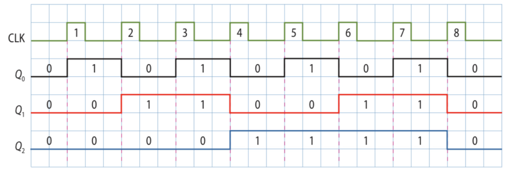
Contador síncrono
En un contador síncrono, todos los flip-flops tienen la misma señal de reloj, por lo que se genera la secuencia deseada al ritmo de los flancos activos del reloj.
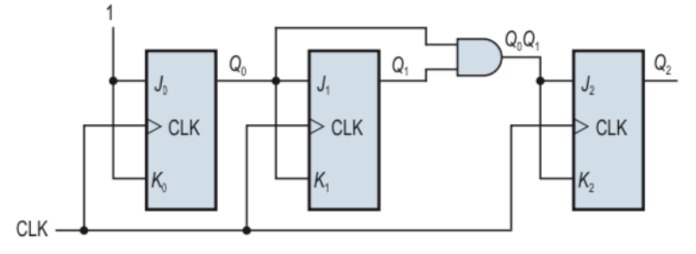
Los contadores son uno de los sistemas más empleados. Sirven para contar tiempo, como divisor de frecuencia o para generar secuencias de control.
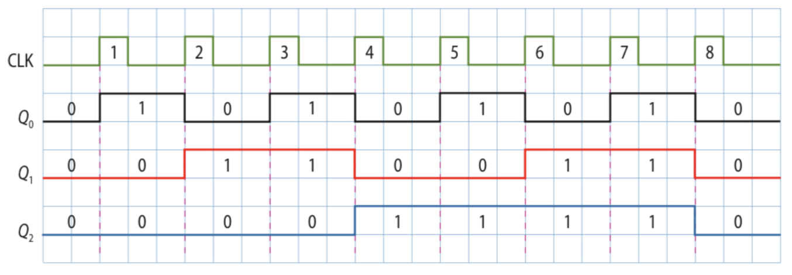
REGISTROS DE DESPLAZAMIENTO
Un registro de desplazamiento es un circuito digital secuencial consistente en una serie de biestables, generalmente de tipo D, conectados en cascada, que basculan de forma sincrónica con la misma señal de reloj.
Según las conexiones entre los biestables, se tiene un desplazamiento a la izquierda (equivale a multiplicar por 2) o a la derecha (equivale a dividir entre 2) de la información almacenada. Existen registros de desplazamiento bidireccionales, que pueden funcionar en ambos sentidos. Los registros universales, además de bidireccionales, permiten la carga en paralelo (todos los bits de golpe).
Dependiendo del tipo de entradas y salidas, los registros de desplazamiento se clasifican como:
- Serie-Serie: sólo la entrada del primer flip-flop y la salida del último son accesibles externamente. Se emplean como líneas de retardo digitales y en tareas de sincronización.
- Paralelo-Serie: son accesibles las entradas de todos los flip-flops, pero solo la salida del último. Normalmente también existe una entrada serie, que sólo altera el contenido del primer flip-flop, pudiendo funcionar como los del grupo anterior. Este tipo y el siguiente se emplean para convertir datos serie en paralelo y viceversa.
- Serie-Paralelo: son accesibles las salidas de todos los flip-flops, pero solo la entrada del primero. Este tipo y el anterior se emplean para convertir datos serie en paralelo y viceversa.
- Paralelo-Paralelo: tanto las entradas como las salidas son accesibles. Se usan para cálculos aritméticos.
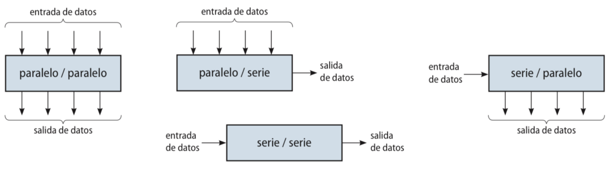
A continuación vemos las formas típicas de construir registros de desplazamiento:
Registros con entrada serie y salida serie (SISO)
A continuación se muestra un registro de desplazamiento con entrada y salida en serie de 5 bits formado con biestables maestro esclavo RS:
Observamos que la entrada del registro está conectada directamente a la entrada S y negada a la entrada R del primer biestable. Con esto se consigue que, cuando en la entrada haya un 1, el primer biestable contendrá un 1 (SET) y los demás un 0. Con la siguiente señal de reloj el bit almacenado en el primer biestable se desplazará al siguiente, (porque la salida Q está conectada a la S del siguiente biestable y lo pone también en SET) y así uno tras otro hasta la salida en serie.
Registros con entrada serie y salida paralelo (SIPO)
La estructura de un registro serie paralelo es muy similar a la de un registro con entrada y salidas en serie:
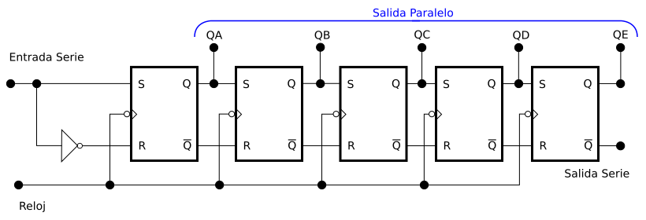
La única diferencia con el SISO es que se le añade una salida a cada una de las salidas Q del biestable: de esta manera se pueden obtener todos los datos a la vez. Por otro lado, también se puede obtener una salida en serie de cualquier salida Q o Q.
Habitualmente se suele añadir una entrada de puesta a cero asíncrona (CLEAR) cuya función es inicializar el registro.
Registros con entrada paralelo y salida serie
Se muestra un esquema de un registro con entrada paralelo y salida serie y carga asíncrona:
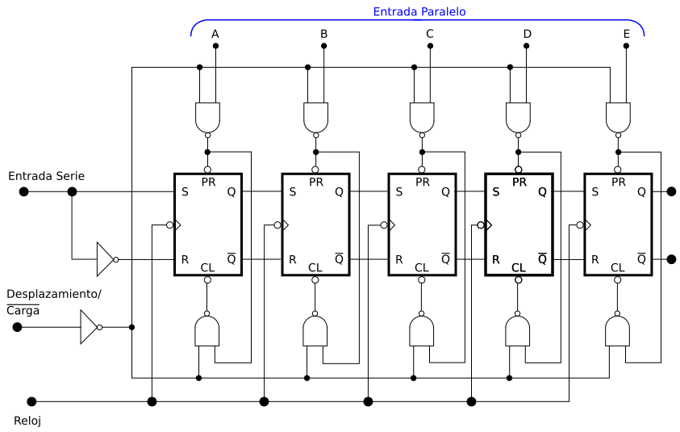
El funcionamiento es el siguiente: cuando en la entrada de selección "Desplazamiento/Carga (D/C)", hay un 0 se realiza la carga. Con el inversor este cero se convierte en un 1 y por lo tanto las puertas NAND que hay arriba y debajo de los biestables se convierten en inversores.
A continuación se introducen los datos: en el bit que haya un 1, se activa el Preset, y en el que haya un cero, se activa el Clear.
Para el desplazamiento se coloca un 1 en D/C de esta manera se consigue que nunca se activan las entradas ni PR ni CL, ya que de las puertas NAND siempre saldrá un 1. El desplazamiento se realiza como en un registro serie-serie.
Registro de entrada y salida en paralelo (PIPO)
En esta imagen se puede ver un registro de entrada y salida paralelo a partir de biestables D con entrada de habilitación:
La entrada de datos es cada una de las entradas D del biestable; las entradas de habilitación se unen a una entrada de habilitación global, de manera que cuando se activa, permite que se lean los datos. Hay otra entrada (Control Salida) que, al activarse, permite que se lean las salidas. Aquí hemos utilizado puertas AND, aunque también podríamos haber utilizado puertas OR y un inversor, o también buffers con entradas de alta impedancia.